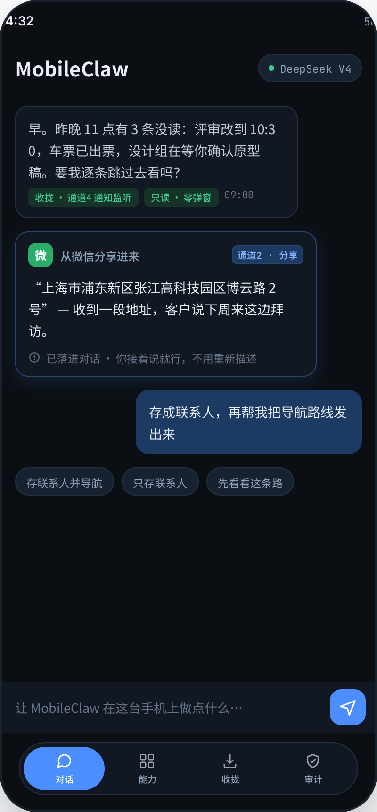
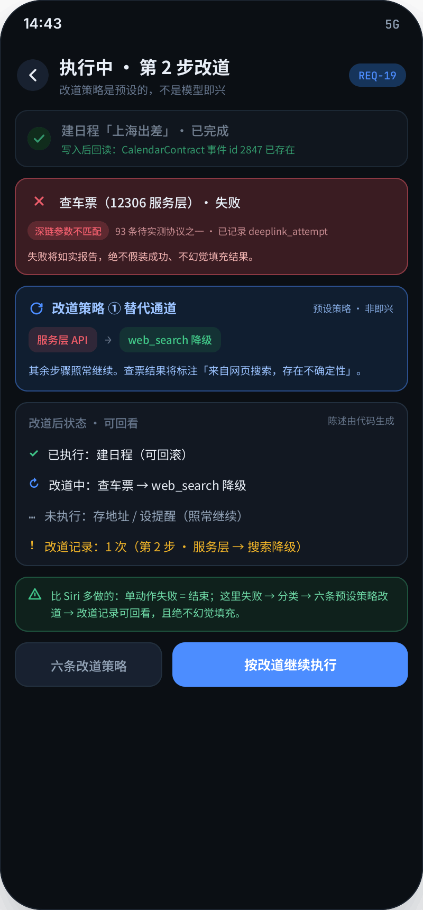
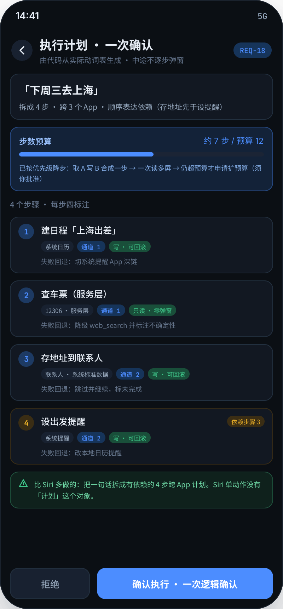
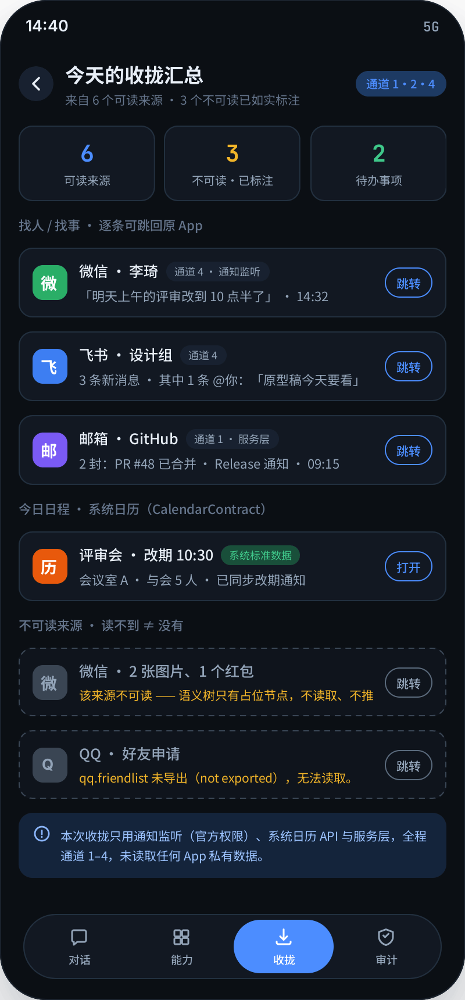
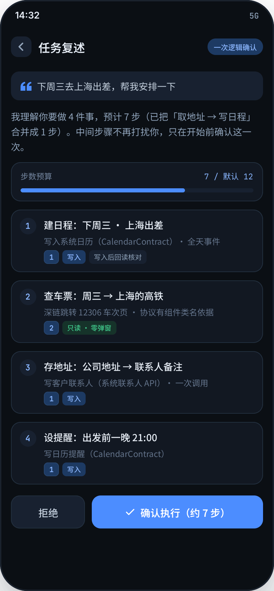
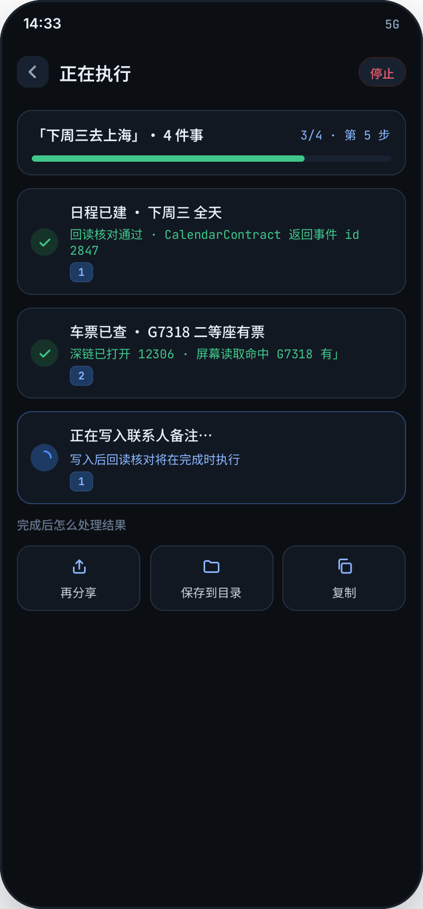
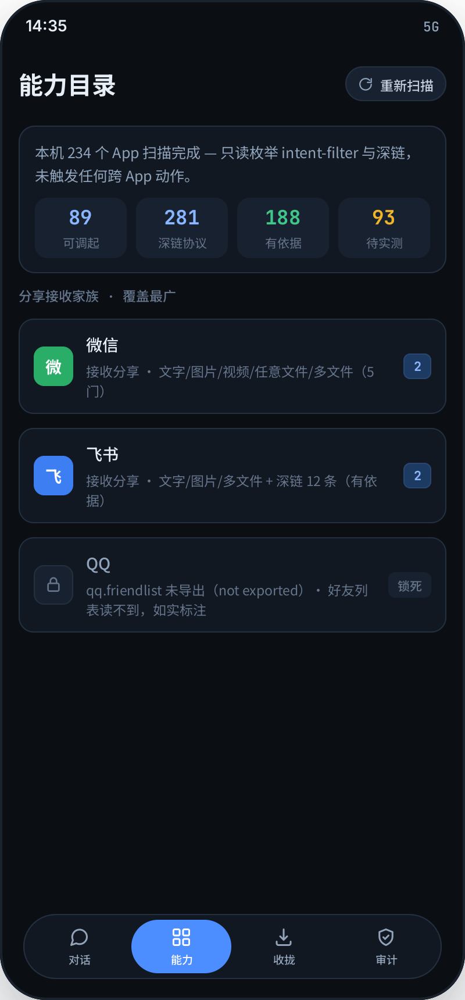
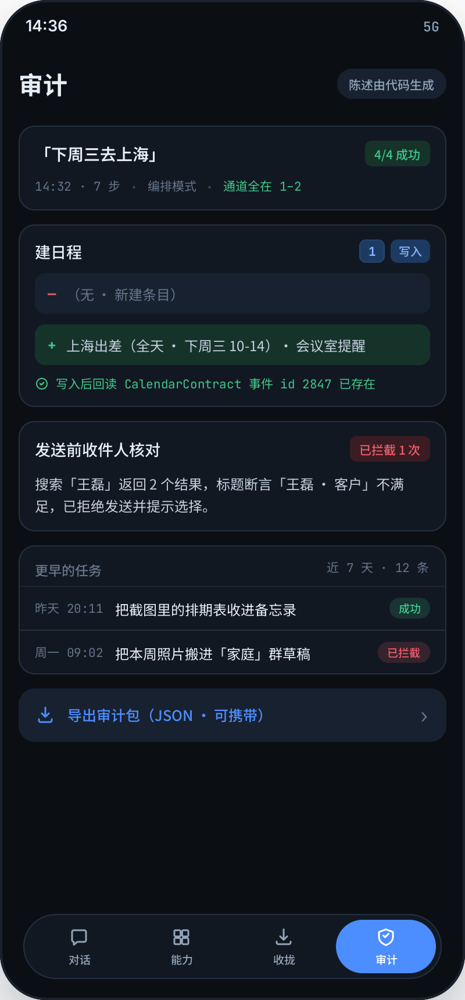
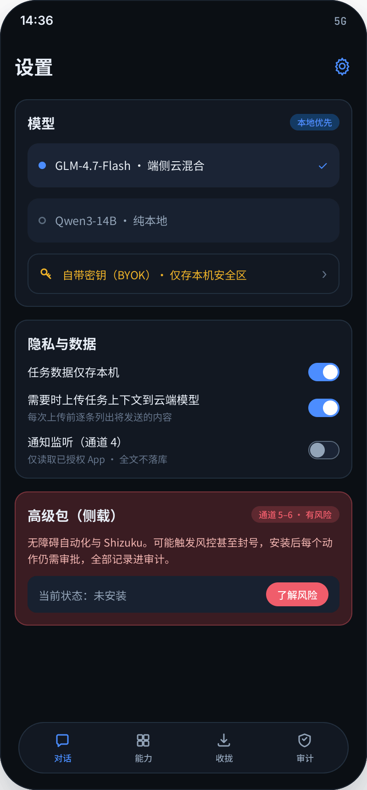

屏8：「下周三去上海」拆成 4 步有依赖的跨 App 计划，每步四标注（目标 App / 通道层级 / 可逆性 / 失败回退），步数预算与计划一体；执行前恰一次逻辑确认。
屏9：第 2 步服务层失败 → 错误分类「深链参数不匹配」→ 预设策略改道 web_search 降级 → 已执行/未执行清单 + 改道记录可回看，绝不幻觉填充。
屏1：微信分享一段客户地址进 MobileClaw，通道 2 标注可见，直接落进对话。
屏7：「今天谁找过我？」——通知监听 + 系统日历 + 服务层把散在 N 个 App 的信息汇到一处；每条带通道徽章、可跳回原 App；读不到的来源如实标注。
屏2：确认前复述 4 件事 7 步，步数预算可见；每步标注通道层级与风险（写入/只读）。
屏3：写入后回读核对（事件 id 2847），深链打开 12306 屏幕读取有命中；完成后可再分享/存目录。
屏4：234 App 只读枚举，89 可调起 / 281 深链 / 188 有依据 93 待实测；QQ 缺口如实标注。
屏5：每次任务的 diff 陈述由代码生成；收件人核对拦截记录可回看；支持导出审计包。
屏6：本地优先模型 / BYOK；云推理逐条列出上传内容；侧载高级包（通道 5–6）明确风险标注。








